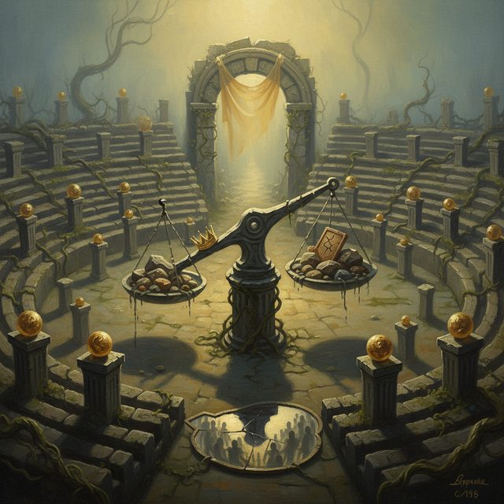
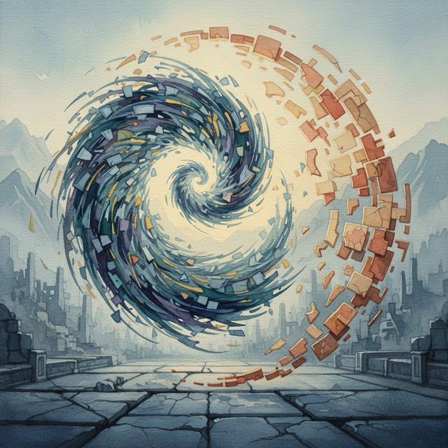
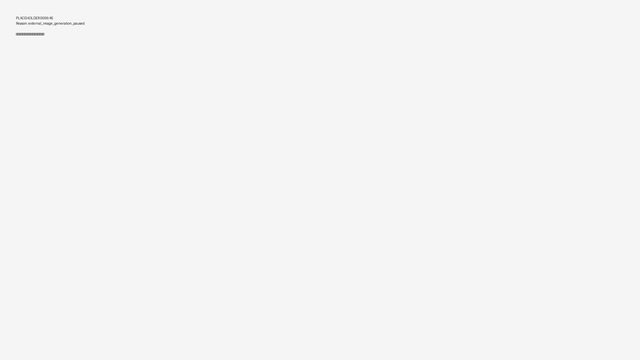
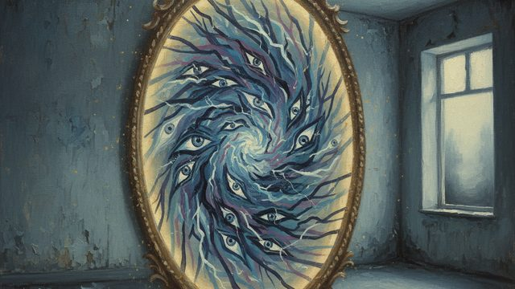
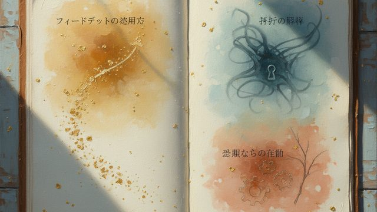
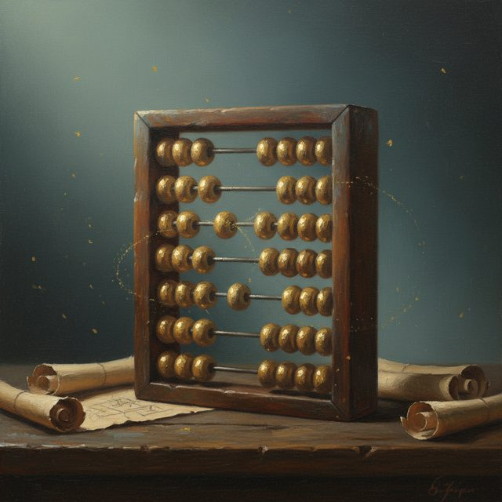

CH02-062 — images
【承認の飢え】反応がないと不安になる理由
ep
CH02
Script Viewer
snapshot
guide
台本
音声
サムネ
画像
CH02-062
画像
updated_at: 2026-01-13T09:30:14.308996Z
run_id:
CH02-062_regen_20260105_175759
CH02-062
承認欲求・投稿

CH02-062
他人・安全
CH02-062
通知・目盛
CH02-062
基準・曖昧

CH02-062
時間・指標

CH02-062
不安・拒絶
CH02-062
過去・承認
CH02-062
貢献・手触
CH02-062
視線・外的動機
CH02-062
評価・安定
CH02-062
部分・承認
CH02-062
反応・分散

CH02-062
他人・苛立
CH02-062
科学的・距離
CH02-062
空虚・承認
CH02-062
価値・長期
CH02-062
承認・情報
CH02-062
承認・疲労
CH02-062
承認・リズム
CH02-062
機嫌・価値
CH02-062
充電・外向
CH02-062
数字・承認
CH02-062
承認・言葉
CH02-062
時間・承認
CH02-062
承認・反応
CH02-062
承認欲求・クッション
CH02-062
承認・時間
CH02-062
最初・感覚
CH02-062
承認・フィードバック
CH02-062
距離・物理的
CH02-062
ゼロ・動機
CH02-062
評価・承認
CH02-062
承認・丁寧
CH02-062
評価・承認
CH02-062
ゲーム・参加

CH02-062
嫉妬・部分
CH02-062
表彰・承認
CH02-062
承認・コスト

CH02-062
承認・熟練
CH02-062
価値・時間
CH02-062
役割・評価
CH02-062
承認・目的
CH02-062
習慣・承認
CH02-062
評価・最後